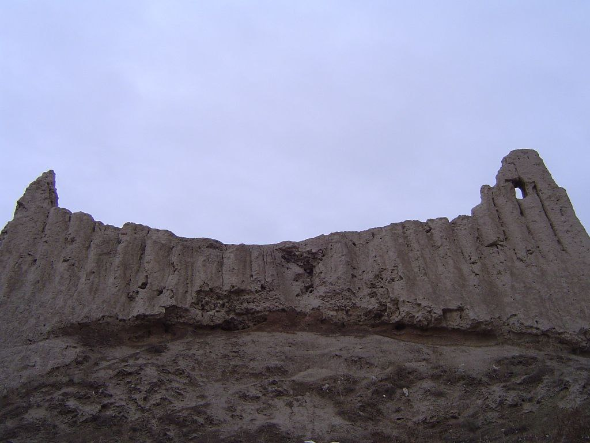
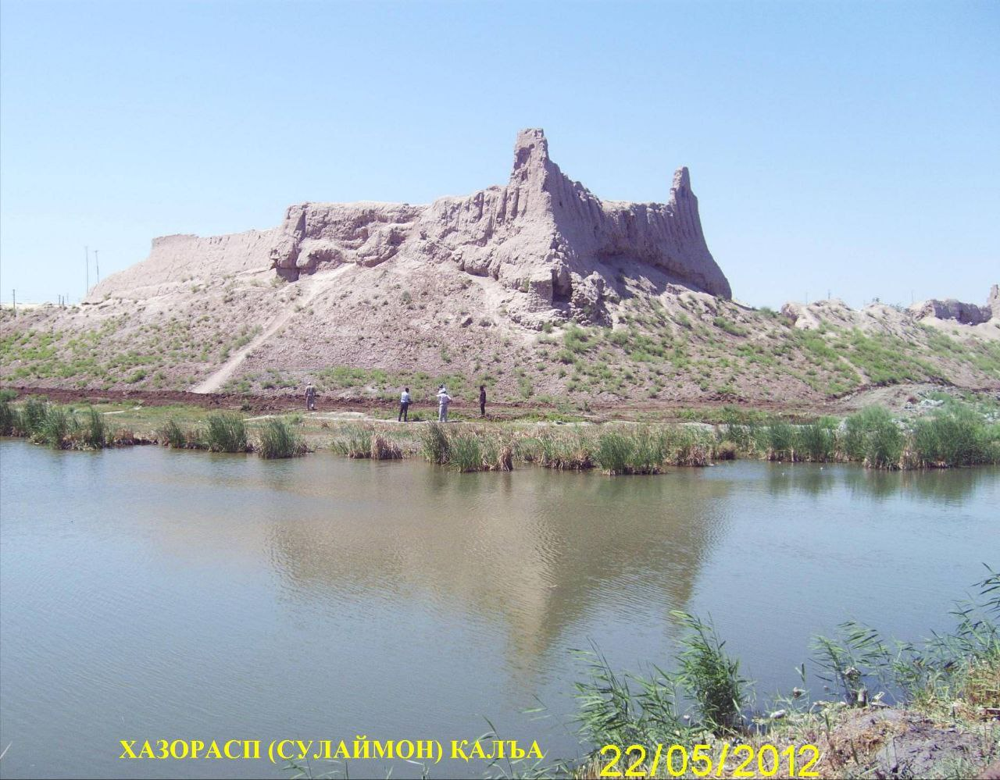

"XAZARASP QAL’ASI"
1. Me’moriy inshootning nomi:
"XAZARASP QAL’ASI"
2. Me’moriy inshoot tiklangan yil:
Eramizdan avvalgi IV-II asrlarga oid
3. Me’moriy inshoot joylashgan manzil:
Xorazm viloyatining Xazarasp shahrida joylashgan.
4. Me’moriy inshootning qurilish materiallari:
Xom g‘isht, paxsa - guvala, qum, alebastr-ganch, yog‘och
5. Inshootning bosh fasadi h.k.lar:


6. Me’moriy inshootning o‘lchamlari
Yodgorlik kvadrat shaklida (340x320 m, ya’ni 10,8 ga) qurilgan. qal’a – g‘arbiy tomoni 290 metr, sharqiy tomoni 294 metr, balandligi 7 metr
7. Me’moriy inshoot to‘g‘risida tarixiy ma’lumot:
Qadimiy qal’alaridan biri bo‘lib, “Sulaymon qal’asi”, ” Devsolgan qal’a”, “Qal’ayi xo‘b joyi mahkam” , ”Hazorasp qal’asi” kabi nomlar bilan yuritilib, eng qadimgi davrlardan to 19 asr oxirlarigacha hayot davom etgan. Qal’a haqida o‘rta asr manbalarida juda ko‘plab ma’lumotlar uchraydi. Hozirgacha aniqlangan tarixiy faktlarga ko‘ra, Hazorasp haqidagi dastlabki yozma ma’lumotlar Abu Rayhon Beruniyning "Qadimgi xalqlardan qolgan yodgorliklar" asarida keltirilgan. At-Tabariy ma’lumotlariga ko‘ra Hazorasp VIII asrda Xorazmning uchta yirik shahridan biri bo‘lgan.
X-XIII asrlarda qal’a devori juda mustahkam, atrofi handak bilan o‘ralgan zabt etish qiyin bo‘lgan shaharlardan biri sifatida ta’riflanadi. Rossiya istilosi-1873 yilgacha bo‘lgan yillarda devonbegi Muhammad Amin vaqtida Hazorasp qal’asi atrofida yangi devor ko‘tariladi. Natijada qal’aning shimoliy devorida 7 ta, janubida 6 ta, g‘arbida 4 ta va sharqida 1 ta himoya minoralari ko‘rinib turadigan bo‘ladi. Qal’a hozirda ham saqlanib qolgan bo‘lib, pastki qismi 3 metrni, tepasi 0,5 metrni tashkil qiladi. Devor paxsadan ko‘tarilgan bo‘lib, somonli loy qorishma bilan suvalgan. Devorning ichki tomonida o‘lchamlari - 40:42x11:12sm xom g‘isht bilan terilgan qatlami ham mavjud.
8. Me’moriy inshootning texnik holati:
50% devor konstruksiyalari ekologik va texnogen ta’sirlar natijasida yo‘qolib ketgan
BOSH SAHIFAGA QAYTISH